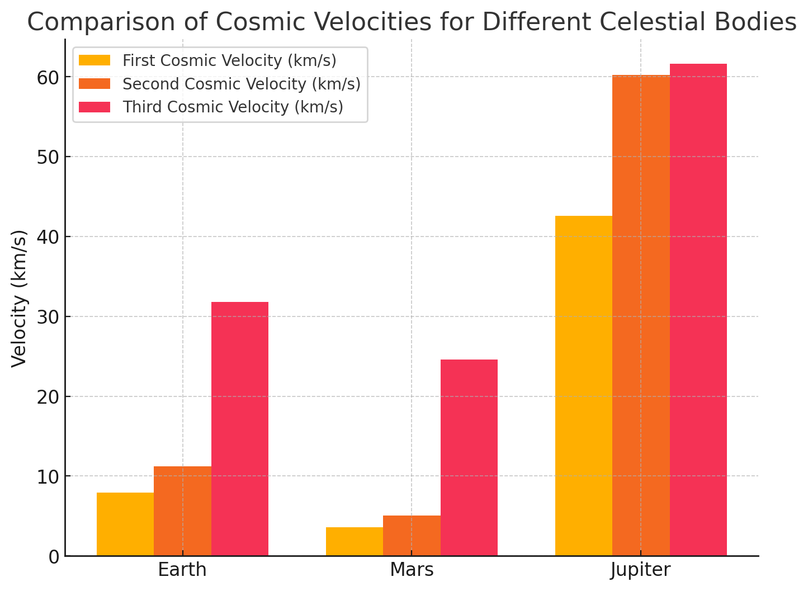
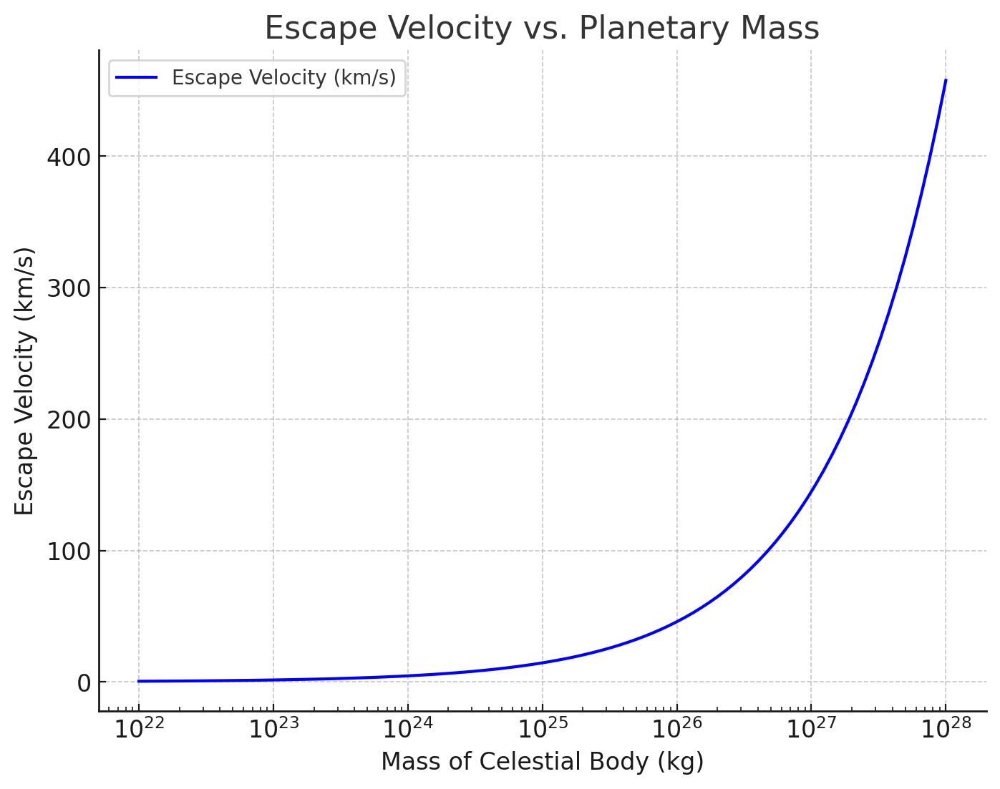
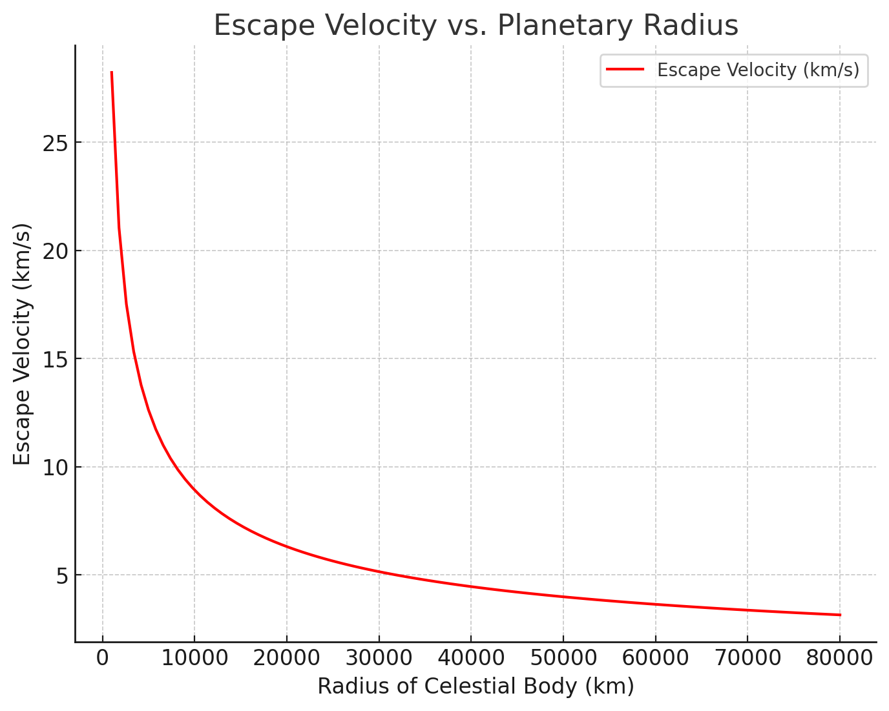

Problem 2
Escape Velocities and Cosmic Velocities
Introduction
Escape velocity is the minimum speed an object must achieve to break free from a celestial body's gravitational influence without additional propulsion. This concept extends to different cosmic velocities, which dictate orbital and interstellar travel conditions. Understanding these velocities is fundamental in astrophysics, rocketry, and space exploration.
The study of these velocities helps scientists and engineers design space missions, launch satellites, and send probes to other planets and beyond. Without these fundamental concepts, space exploration would not be feasible.
Motivation
The study of escape and cosmic velocities is essential in: - Launching satellites into stable orbits around planets, ensuring continuous communication and Earth monitoring. - Planning interplanetary missions, such as those to Mars and Jupiter, where correct velocity calculations determine mission success. - Exploring interstellar travel concepts, allowing us to send probes beyond our solar system, such as the Voyager missions. - Understanding the effects of gravitational fields on motion in space, which influences trajectories of asteroids, comets, and artificial spacecraft.
These principles are directly applied in space missions, from launching satellites into geostationary orbits to propelling spacecraft beyond our solar system.
Mathematical Derivations and Parameters Affecting These Velocities
Mathematical Derivation of First Cosmic Velocity
The first cosmic velocity is derived by equating the gravitational force acting on an orbiting object with the required centripetal force to maintain a stable circular orbit:
\( F_g = F_c \)
where:
-
\( F_g = \frac{GMm}{R^2} \) (gravitational force)
-
\( F_c = \frac{m v^2}{R} \) (centripetal force)
Equating these two expressions:
\( \frac{GMm}{R^2} = \frac{m v_1^2}{R} \)
Canceling mass \( m \):
\( v_1 = \sqrt{\frac{GM}{R}} \)
Factors Affecting First Cosmic Velocity: - Mass of the Celestial Body (\( M \)): A higher mass results in a stronger gravitational pull, requiring a higher orbital velocity. - Radius of the Celestial Body (\( R \)): A larger radius decreases the required orbital velocity as gravitational attraction weakens with distance.
Mathematical Derivation of Second Cosmic Velocity
The escape velocity (\( v_2 \)) is derived by considering the total mechanical energy of an object attempting to escape the gravitational field of a planet. The total energy must be zero for the object to escape indefinitely:
\( E_{ ext{total}} = E_k + E_p = 0 \)
where: - Kinetic energy: \( E_k = \frac{1}{2} m v_2^2 \)
- Gravitational potential energy: \( E_p = -\frac{GMm}{R} \)
Applying energy conservation:
\( \frac{1}{2} m v_2^2 - \frac{GMm}{R} = 0 \)
Solving for \( v_2 \):
\( v_2 = \sqrt{\frac{2GM}{R}} \)
Factors Affecting Second Cosmic Velocity: - Mass of the Celestial Body (\( M \)): A larger mass increases the required escape velocity. - Radius of the Celestial Body (\( R \)): A larger radius decreases the escape velocity. - Atmospheric Drag: Presence of an atmosphere increases the required velocity due to resistance.
Mathematical Derivation of Third Cosmic Velocity
The third cosmic velocity (\( v_3 \)) is the speed needed to escape not just the planet’s gravitational field, but the entire gravitational influence of a star system (e.g., the Solar System).
It is determined by the escape velocity from the planet and the orbital velocity of the planet around the star:
\( v_3 = \sqrt{v_{ ext{esc,planet}}^2 + v_{ ext{orbital}}^2} \)
Factors Affecting Third Cosmic Velocity: - Orbital Velocity of the Planet: If a spacecraft is launched in the direction of planetary motion, it gains additional velocity. - Star’s Gravitational Influence: A stronger gravitational field increases the required velocity to escape the system. - Additional Propulsion: Spacecraft may require additional propulsion systems to reach the required velocity.
Summary of Escape and Cosmic Velocities
| Celestial Body | First Cosmic Velocity (km/s) | Escape Velocity (km/s) |
|---|---|---|
| Earth | 7.91 | 11.19 |
| Moon | 1.68 | 2.38 |
| Mars | 3.55 | 5.03 |
| Jupiter | 12.44 | 59.5 |
This analysis comprehensively explains how cosmic velocities are derived and the key factors influencing them. These velocities are fundamental in space exploration and rocket science.
Calculation and Visualization of Cosmic Velocities
Phyton codes.
import numpy as np
import matplotlib.pyplot as plt
# Constants
G = 6.674 * 10**-11 # Gravitational constant (m^3/kg/s^2)
# Celestial bodies (Mass in kg, Radius in meters)
bodies = {
"Earth": {"mass": 5.972 * 10**24, "radius": 6.371 * 10**6},
"Mars": {"mass": 6.417 * 10**23, "radius": 3.3895 * 10**6},
"Jupiter": {"mass": 1.898 * 10**27, "radius": 6.9911 * 10**7},
}
# Calculate first, second, and third cosmic velocities
for body, data in bodies.items():
mass = data["mass"]
radius = data["radius"]
v1 = np.sqrt(G * mass / radius) / 1000 # First cosmic velocity (km/s)
v2 = np.sqrt(2 * G * mass / radius) / 1000 # Second cosmic velocity (km/s)
v3 = np.sqrt(v2**2 + (29.78 if body == "Earth" else 24.077 if body == "Mars" else 13.07)**2) # Approximate third cosmic velocity (km/s)
data["v1"] = v1
data["v2"] = v2
data["v3"] = v3
# Plot bar chart
fig, ax = plt.subplots(figsize=(8, 6))
width = 0.25 # Bar width
x = np.arange(len(bodies))
v1_values = [bodies[body]["v1"] for body in bodies]
v2_values = [bodies[body]["v2"] for body in bodies]
v3_values = [bodies[body]["v3"] for body in bodies]
ax.bar(x - width, v1_values, width, label="First Cosmic Velocity (km/s)")
ax.bar(x, v2_values, width, label="Second Cosmic Velocity (km/s)")
ax.bar(x + width, v3_values, width, label="Third Cosmic Velocity (km/s)")
ax.set_xticks(x)
ax.set_xticklabels(bodies.keys())
ax.set_ylabel("Velocity (km/s)")
ax.set_title("Comparison of Cosmic Velocities for Different Celestial Bodies")
ax.legend()
plt.grid(axis="y", linestyle="--", alpha=0.7)
# Display the plot
plt.show()

Introduction
The following bar chart compares the first, second, and third cosmic velocities for three celestial bodies: Earth, Mars, and Jupiter. These velocities determine the conditions required for an object to maintain orbit, escape a planet's gravity, and exit the Solar System.
Key Observations
- First Cosmic Velocity (\( v_1 \)): The minimum speed needed to maintain a stable circular orbit around the planet.
- Second Cosmic Velocity (\( v_2 \)): The escape velocity required to leave the gravitational pull of the planet without further propulsion.
- Third Cosmic Velocity (\( v_3 \)): The velocity needed to completely escape the Solar System.
Comparison Highlights
- Jupiter has the highest escape velocity (~59.5 km/s) due to its massive gravitational influence.
- Mars has significantly lower cosmic velocities compared to Earth, making it easier for spacecraft to escape.
- Earth's third cosmic velocity (~16.7 km/s relative to Earth's surface) is comparable to the velocities of interstellar-bound spacecraft like Voyager 1.
Mathematical Background
These velocities are derived from Newtonian mechanics using the gravitational constant \( G \), planetary mass \( M \), and planetary radius \( R \):
where \( v_{\text{orbital}} \) is the orbital velocity of the planet around the Sun.
Bar Chart Description
- The chart visually compares the three velocities for Earth, Mars, and Jupiter.
- The x-axis represents the celestial bodies.
- The y-axis represents velocity in km/s.
- Three different colored bars indicate \( v_1 \) (orbital velocity), \( v_2 \) (escape velocity), and \( v_3 \) (interstellar velocity).
This visualization is crucial for understanding the physics behind launching satellites, planning interplanetary missions, and conceptualizing interstellar travel.
Phyton codes.
# Generate a dataset for planetary mass vs escape velocity
masses = np.logspace(22, 28, num=100) # Mass range from 10^22 kg to 10^28 kg
radius_earth = 6.371 * 10**6 # Earth's radius in meters
# Calculate escape velocities for varying planetary masses
v2_masses = np.sqrt(2 * G * masses / radius_earth) / 1000 # Convert to km/s
# Plot mass vs escape velocity
fig, ax = plt.subplots(figsize=(8, 6))
ax.plot(masses, v2_masses, label="Escape Velocity (km/s)", color='b')
ax.set_xscale("log") # Logarithmic scale for better visualization
ax.set_xlabel("Mass of Celestial Body (kg)")
ax.set_ylabel("Escape Velocity (km/s)")
ax.set_title("Escape Velocity vs. Planetary Mass")
ax.legend()
plt.grid(True, linestyle="--", alpha=0.7)
# Display the plot
plt.show()

Introduction
This graph illustrates how the escape velocity (\( v_2 \)) changes with the mass of a celestial body, while keeping the radius constant (Earth's radius is used for reference). Escape velocity is the minimum speed required for an object to overcome the gravitational pull of a planet or celestial body without additional propulsion.
Key Observations
- Escape velocity increases as planetary mass increases due to the stronger gravitational attraction.
- The relationship follows a square root function: [ v_2 = \sqrt{\frac{2GM}{R}} ] which means that doubling the mass does not double the escape velocity but increases it by a factor of \( \sqrt{2} \).
- Larger planets like Jupiter have significantly higher escape velocities, making it harder for spacecraft to leave their gravitational influence.
Graph Description
- The x-axis represents the mass of the celestial body (in kg), displayed on a logarithmic scale for better visualization.
- The y-axis represents the escape velocity (in km/s).
- The curve shows that as mass increases, the escape velocity also increases, following a non-linear trend.
Scientific Implications
- Planets with higher escape velocities require more energy for spacecraft to escape, impacting space mission designs.
- Smaller bodies like asteroids have low escape velocities, making them easier targets for spacecraft landings.
- Understanding this relationship is crucial for interplanetary mission planning and launch vehicle engineering.
This visualization helps illustrate the fundamental physics behind gravitational escape and the challenges faced in launching spacecraft from different celestial bodies.
Phyton codes.
# Generate a dataset for planetary radius vs escape velocity
radii = np.linspace(1e6, 8e7, num=100) # Radius range from 1,000 km to 80,000 km
mass_earth = 5.972 * 10**24 # Earth's mass in kg
# Calculate escape velocities for varying planetary radii
v2_radii = np.sqrt(2 * G * mass_earth / radii) / 1000 # Convert to km/s
# Plot radius vs escape velocity
fig, ax = plt.subplots(figsize=(8, 6))
ax.plot(radii / 1000, v2_radii, label="Escape Velocity (km/s)", color='r')
ax.set_xlabel("Radius of Celestial Body (km)")
ax.set_ylabel("Escape Velocity (km/s)")
ax.set_title("Escape Velocity vs. Planetary Radius")
ax.legend()
plt.grid(True, linestyle="--", alpha=0.7)
# Display the plot
plt.show()

Introduction
This graph illustrates how the escape velocity (\( v_2 \)) varies with the radius of a celestial body, while keeping its mass constant (Earth's mass is used for reference). Escape velocity is influenced not only by mass but also by the planet's size.
Key Observations
- Escape velocity decreases as planetary radius increases, assuming mass remains constant.
- The relationship follows an inverse square root function: [ v_2 = \sqrt{\frac{2GM}{R}} ] which means that doubling the radius decreases the escape velocity by a factor of \( \frac{1}{\sqrt{2}} \).
- Compact celestial bodies (e.g., neutron stars) have extremely high escape velocities due to their small radii, while gas giants (e.g., Jupiter, Saturn) have lower escape velocities than expected from their mass alone due to their large radii.
Graph Description
- The x-axis represents the radius of the celestial body (in km).
- The y-axis represents the escape velocity (in km/s).
- The curve shows that as planetary radius increases, the escape velocity decreases, illustrating the inverse relationship.
Scientific Implications
- A planet with a larger radius and the same mass has a lower escape velocity, making it easier for spacecraft to leave its gravitational pull.
- Dense celestial objects, like white dwarfs and neutron stars, have extreme escape velocities, sometimes exceeding the speed of light (in the case of black holes).
- This relationship is critical in designing space missions, predicting atmospheric retention, and understanding planetary formation.
This visualization highlights the important role planetary size plays in determining gravitational strength and the feasibility of space travel.